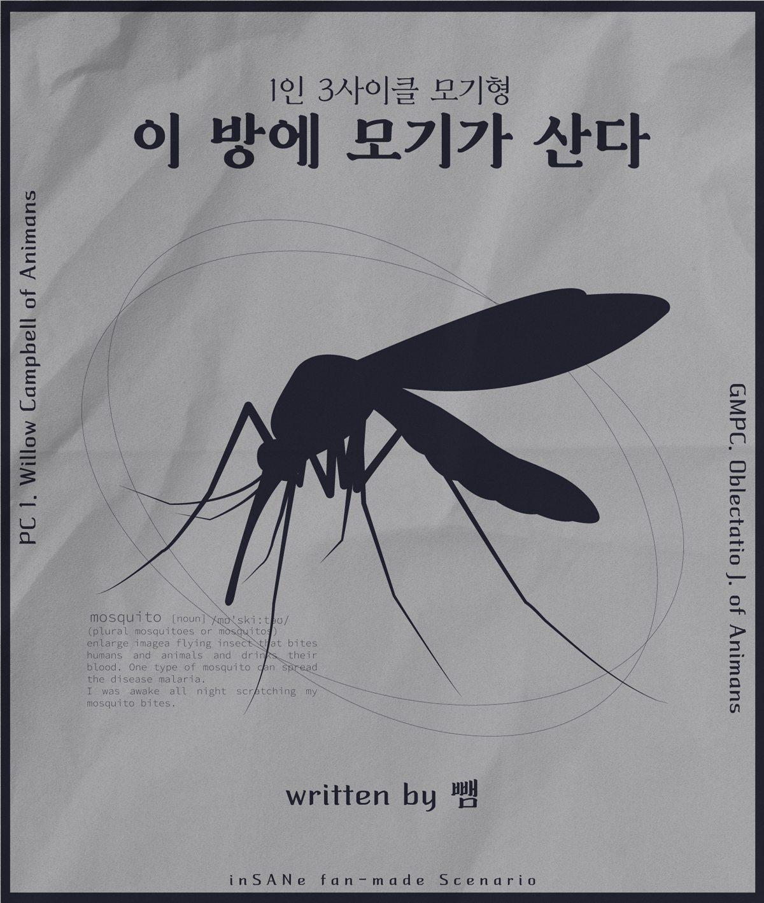

SESSION START :
2023.03.01 PM 08:32
GM :
은향
PL :
낑깡
PC 1 :
Willow Campbell of Ánĭmans
잠을 자려는 데, 들리는 건… 모기의 소리?
이 방에 모기가 있어!
인세인 시나리오 1인 3사이클 모기형
inSANe SCENARIO :: 이 방에 모기가 산다
도입 페이즈─────.
GM :
이곳은 미국의 한 여름밤입니다.
유독 습한 지역이군요.
에어컨을 틀었음에도 습한 기운이 쉽게 날아가지 않습니다.
곧 습기가 사라질 것이라 믿고 호텔에서 잠을 청하다보면... 윌라는 무언가 소리를 듣습니다.
윌라는 이 방에 모기가 있다는 것을 깨닫습니다.
《소리》로 공포판정.
윌로우 캠벨 오브 아니만스 :
2D6>=6 [ 소리 ] ＞ 7[3,4] ＞ 성공
GM :
일어나서 불을 켜보면, 모기 소리가 귀신같이 사라집니다!
다행인진 모르겠지만 옆에 잠든 오블레는 아직 깰 기색이 보이지 않습니다.
하지만 이 안 어딘가에 모기가 있는 게 분명합니다!
GM :
핸드아웃 《창문》 《옷장》 《책상》을 공개합니다.
─────도입 페이즈 종료.
메인 페이즈─────.
───1 Cycle───
장면 플레이어: 윌로우 캠벨 오브 아니만스｜등장인물: 전원
윌로우 캠벨 오브 아니만스 :
(습기에 갑갑해져 더운 숨을 내쉰다. 다시 힐끗, 곤히 잠든 오블레 바라본다. …혹시 깨실 수 있으니 조용히, 또 빠르게 모기를 잡아야겠어)
윌로우 캠벨 오브 아니만스 :
(그렇게 슬리퍼 신은 채 천천히 창문 가까이 걸어간다. 창밖에서 달빛이 비추어 들어오니 그늘에 숨어있을 모기가 보일지도 몰라. …모기가 있나 주위 살펴본다. 눈으로 창문 근처를 보고 있으므로
'풍경' 판정하겠습니다)
GM :
좋아요. 윌라, 풍경으로 조사판정입니다.
윌로우 캠벨 오브 아니만스 :
2D6>=5 [ 풍경 ] ＞ 7[2,5] ＞ 7 ＞ 성공
GM :
'창문' 핸드아웃의 뒷면이 공개됩니다.
윌로우 캠벨 오브 아니만스 :
2D6>=9 [ 그늘 ] ＞ 9[4,5] ＞ 9 ＞ 성공
[ 윌로우 캠벨 오브 아니만스 ] 이성치 : 6 → 5
윌로우 캠벨 오브 아니만스 :
…(급격히 굳은 얼굴로 방충망을 힘주어 닿는다. 탁, 하며 플라스틱 끝과 창틀이 맞물리는 소리가 난다. …모기가 얼마나 들어왔을까? 한 마리, 아니 못해도 세 마리는 들어왔을 거야. 벌써부터 팔
부분부분이 간질거리는 느낌이 든다. 조심스레 손 가져다 대 모기가 없음을 제게 확인시킨다. 그런… 경험을 레레에게도 시키고 싶지 않아. 레레 피는 소중한걸, 레레는 아프면 안 되니까…)
어디에…(혼잣말로 중얼거리며 고개 돌려 다른 곳을 바라본다. 밤빛에 반짝이는 모기 날개가 안 보이나, 그들의 작은 움직임이 보이지 않나. …이 두 눈은 항상 말썽이구나. 하나도 보이지
―x―x―x―x―x―x―x―x―
───2 Cycle───
장면 플레이어: 윌로우 캠벨 오브 아니만스｜등장인물: 윌로우...와 아기
윌로우 캠벨 오브 아니만스 :
(기어이 몸 방향을 틀어 다른 곳으로 발걸음을 옮긴다. 조용히 움직이겠노라 다짐한 것치고는 성급한 걸음, 그래도 슬리퍼를 신어 바닥 마찰되는 소리가 울리진 않는다. …눈 가늘게 뜨고 옷장을
바라본다.
여기에 있을까? 열심히 옷장을 관찰한다. 거리가 얼마 안 되니 눈이 어둠에 익숙해지지 않았더라도 모기의 움직임은 판별해낼 터. 오블레를 걱정하며... 모기를 찾아내려 하고 있으므로
'걱정'
판정하겠습니다)
GM :
좋아요, 걱정으로 조사 판정입니다.
윌로우 캠벨 오브 아니만스 :
2D6>=5 [ 걱정 ] ＞ 4[1,3] ＞ 실패
윌로우 캠벨 오브 아니만스 :
(부적 사용할게요;)
GM :
윌로우 캠벨 오브 아니만스, 부적을 사용합니다. 다시 한 번 걱정으로 조사 판정입니다.
윌로우 캠벨 오브 아니만스 :
2D6>=5 [ 걱정 ] ＞ 9[4,5]＞ 성공
GM :
'옷장' 핸드아웃의 뒷면이 공개됩니다.
윌로우 캠벨 오브 아니만스 :
(전기 파리채… 지직거리는 소리에 레레가 깨진 않으려나. 흘긋 네 자는 모습 쳐다보며 전기파리채 손에 쥔다)
―x―x―x―x―x―x―x―x―
물렸어!
GM :
윌라의 귀에 모기의 소리가 다시 들립니다.
윌라는 갑자기 몸의 어딘가 간지럽습니다.
1D6 굴려주세요.
윌로우 캠벨 오브 아니만스 :
1d6 ＞ 4
GM :
윌라는 오른 다리를 물렸다는 것을 깨닫습니다.
《촉감》으로 공포판정.
윌로우 캠벨 오브 아니만스 :
2D6>=6 [ 촉감 ] ＞ 8[3,5] ＞ 성공
GM :
핸드아웃 《모깃소리》를 공개합니다.
───3 Cycle───
장면 플레이어: 윌로우 캠벨 오브 아니만스｜등장인물: 윌로우와 곤히자는아기천사
윌로우 캠벨 오브 아니만스 :
(…가려워. 미간이 저절로 찌푸려진다. 넌 안 물렸을까?)
(얼마간 네게 시선 두다 떼어낸다. 일단, 은… 모기를 잡는 게 먼저야. 남은 곳은 하나밖에 없지. 가느다란 소리가 들리는 저기)
(천천히 기척 죽여가며 모깃소리 들려온 곳으로 걸어간다. 전기 파리채의 전원 스위치를 엄지손가락으로 꾹 누른다. 어디에 앉아있지, 피 마셔 살찐 모기가 있는 곳을 찾아야 해… 오블레에 대한 사랑을
기반으로
모기를 찾고 있으므로 '연심' 판정하겠습니다)
GM :
조 좋아요.....
연심으로ㅜ 모깃소리 조사 판정입니다.
윌로우 캠벨 오브 아니만스 :
2D6>=5 [ 연심 ] ＞ 4[2,2] ＞ 실패
오블렉타티오 오브 아니만스 :
(윌리가 다시 침대에 와서 잠들 때까지 눈을 감고 기다리고 있었지만 영 올 기색이 없자 팔로 체중을 지탱해 상체를 반쯤 들어올립니다) ...일어나서 뭐 해?
오블렉타티오 오브 아니만스 :
(윌로우의 조사판정에 부적 사용합니다;)
GM :
다시 한 번 연심으로 모깃소리 조사 판정입니다.
윌로우 캠벨 오브 아니만스 :
…모기가, …있어서요. 당신께 피해가 갈까 봐 잡으려고… (네 얼굴 보며 답하다 다시 고개 돌려 모깃소리 들리는 곳 바라본다. …깨워버렸어…)
윌로우 캠벨 오브 아니만스 :
2D6>=5 [ 연심 ] ＞ 5[2,3] ＞ 성공
GM :
《모깃소리》의 뒷면이 공개됩니다.
오블렉타티오 오브 아니만스 :
...모기가? (얼핏 모기의 날개짓 소리를 듣고 눈동자를 굴려본다) 그것 때문에 깬 거야?
윌로우 캠벨 오브 아니만스 :
네…(우물쭈물 답하다 네 가까이에 앉은 모기 보고 눈 동그랗게 뜬다. 목소리도 살짝 커진 채) 앗, 거기에…!
(주저하다 점점 네쪽으로 걸어와, 날아가지 마라, …조금만 다른 곳으로 떨어져주라)
오블렉타티오 오브 아니만스 :
(윌리는 물론이고, 어지간해선 사람을 보고 움츠러들지 않지만… 전기파리채와 어둑한 환경 탓에 입술을 잠깐 달싹인다)
―x―x―x―x―x―x―x―x―
클라이맥스 페이즈─────.
GM :
에너미 《모기》에게 전투를 거나요?
윌로우 캠벨 오브 아니만스 :
(전투를 겁니다)
윌로우 캠벨 오브 아니만스 :
(레레에게 피해가 안 가는 선에서 모기를 잡을 방법이, …걸어가면서 끊임없이 생각한다. 몸에 충격이 가서는 안 돼, 옷에 피가 묻어서도 안 되고. 아, 어떻게… 처리해야… 입술을 잘근 문다.
전기파리채
쥔
손에 힘을 주다, 결국은 파리채 면을 수평을 뉘어 죽이는 방식을 택해)
(눕힌 채로 천천히 모기에게 파리채를 가까이 한다. 날아가지 마라, 그냥 이대로 맞아줘)
GM :
윌라는 파리채를 가까이 들이댑니다!
그리고 타닥, 소리가 나기도 전에 모기는 거슬리는 소리를 내며 날아갑니다.
괴이와의 전투를 시행합니다.
윌로우, 플롯을 굴려주세요.
[ 윌로우 캠벨 오브 아니만스 ] 가 다이스 심볼을 공개. 주사위 눈은 4 입니다.
[ 모기 ] 가 다이스 심볼을 공개. 주사위 눈은 1 입니다.
GM :
윌로우의 선공입니다.
윌로우 캠벨 오브 아니만스 :
아…!(날아가는 것 눈으로 쫓으며 탄식한다. 한 걸음 크게 하며 다가가 모기가 희미하게 보이는 곳에 파리채 휘둘러)
GM :
기본 공격, 굴려주세요.
윌로우 캠벨 오브 아니만스 :
2D6+2>=5 / 【기본공격】｜공격｜《구타》｜목표 1명을 선택해서 명중판정을 한다. 명중판정이 성공하고, 목표가 회피판정에 실패하면 1D6점 대미지. (2D6+2>=5) ＞
4[1,3]+2
＞ 성공
모기 :
2D6>=1+4 [회피 롤-일반] ＞ 7[3,4] ＞ 성공
GM :
윌로우의 파리채는 그대로 허공을 휘젓습니다!
모기의 차례입니다.
모기 :
2D6>=5 / 【기본공격】｜공격｜《찌르기》 ＞ 4[1,3] ＞ 실패
GM :
윌로우는 모기가 물기 전에 재빠르게 파리채를 다시 한 번 휘두릅니다.
GM :
모기가 파리채를 피해 날아가는 것이 눈에 보입니다.
윌로우의 차례입니다.
윌로우 캠벨 오브 아니만스 :
(어디에 앉진 않는 걸까…? 날아가는 모기에 여전히 눈 고정한 채 다시 파리채를 휘두른다. 아까와는 반대되는 방향으로 팔을 움직여)
오블렉타티오 오브 아니만스 :
윌리, 내 생각은……. (선풍기를 트는 건 어떻겠냐고 말하기 위해 다가오려다 윌리가 파리채를 휘둘러 움찔합니다;)
GM :
윌리, 기본공격 판정입니다.
윌로우 캠벨 오브 아니만스 :
2D6+2>=5 / 【기본공격】｜공격｜《구타》｜목표 1명을 선택해서 명중판정을 한다. 명중판정이 성공하고, 목표가 회피판정에 실패하면 1D6점 대미지. (2D6+2>=5) ＞
10[4,6]+2 ＞ 성공
모기 :
2D6>=1+4 [회피 롤-일반] ＞ 5[1,4] ＞ 성공
GM :
윌라는 있는 힘껏 파리채를 휘두릅니다.
타다닥! 전류가 흐르는 소리가 들립니다.
해치웠나? 주변을 둘러보면...
다시 한 번 귓가에 모기의 날갯짓 소리가 들립니다.
모기의 차례입니다.
모기 :
2D6>=5 / 【기본공격】｜공격｜《찌르기》 ＞ 7[3,4] ＞ 성공
GM :
윌라, 회피 판정입니다.
윌로우 캠벨 오브 아니만스 :
으…(귀를 손으로 막으며 모기가 어디에 있나 주위를 두리번거려, 주춤이며 뒤로 물러난다) 다, 당신 잠시만요
, 모기, 모기부터
…
윌로우 캠벨 오브 아니만스 :
2D6>=4+4 [회피 롤-일반] (2D6>=8) ＞ 6[1,5]＞ 실패
GM :
모기의 어빌리티가 활성화됩니다.
모기 :
【가렵지?】｜장비｜공격이 성공했을 경우, PC에게 주는 대미지는 1로 고정한다. 공격 당한 PC는 《일반 부위표》를 굴린다. 해당 부위를 물린 것으로 취급한다.
윌로우 캠벨 오브 아니만스 :
1d6 ＞ 2
GM :
어딘가 가려운 느낌이 듭니다.
이런, 왼 다리를 물리고 말았습니다!
이번에야말로 저 간악한 모기를 처리해야 할 때입니다.
윌라의 차례입니다.
[ 윌로우 캠벨 오브 아니만스 ] 생명력 : 6 → 5
윌로우 캠벨 오브 아니만스 :
(양 다리가 간지럽다. 그 근질거림이 몸을 타고 올라와 머리에까지 닿는 기분에 눈살을 찌푸린다. 다리를 물었으니 아마 그 근처에서 날아다니고 있을 모기가 슬슬 지긋지긋하다 느껴진다)
(…한편으로는 자기만 물렸다는 사실에 대한 안도감도 느낀다. 레레가 가려워하는 기색은 아직까지 없지, 그치. …그러면 괜찮아, 그러면 됐어…)
(몸 조금 낮추어 파리채 제 몸 주변으로 하며 붕 휘둔다)
오블렉타티오 오브 아니만스 :
(그렇게까지)
GM :
윌리, 기본공격 판정입니다!
윌로우 캠벨 오브 아니만스 :
2D6+2>=5 / 【기본공격】｜공격｜《구타》｜목표 1명을 선택해서 명중판정을 한다. 명중판정이 성공하고, 목표가 회피판정에 실패하면 1D6점 대미지. (2D6+2>=5) ＞
8[2,6]+2
＞
10 ＞ 성공
오블렉타티오 오브 아니만스 :
(이렇게까지?)
모기 :
2D6>=1+4 [회피 롤-일반] ＞ 4[1,3] ＞ 4 ＞ 실패
윌로우 캠벨 오브 아니만스 :
3d6 (3D6) ＞ 11[3,3,5] ＞ 11
GM :
다시 한 번 모깃소리가 귓가에 스칩니다.
그리고 세 번은 없습니다.
당신은 모깃소리가 들리는 곳을 향해 정확히 파리채를 내리칩니다.
타다닥! 전류가 흐르는 소리가 들립니다.
파리채의 정 중앙이 희고 밝게 빛납니다.
피할 수 없는 공격이었을 겁니다.
승리를 예감하고 발 밑을 바라보면...
현대과학의 힘에 불탄 모기의 시체가 힘 없이 늘어져있습니다.
─────클라이맥스 페이즈 종료.
─────엔딩 페이즈─────
오블렉타티오 오브 아니만스 :
(눈 앞에서 점멸하는 빛을 보고 미간을 구기다 윌리를 따라 발 밑을 내려다본다) …잡았네.
윌로우 캠벨 오브 아니만스 :
그러…게요.(붉은 자국 남은 모기의 시체 바라보다 휴지 찾으려 고개 든다. 그러더니, 멈칫하고는 느릿하게 네게로 얼굴 방향 틀어)
…죄송해요, 깨우지 않으려 했는데… 많이 소란스러웠나요…? (한 박자 쉬다 조금은 다급함 담긴 목소리로)
물리신 곳은 없으시죠…?
오블렉타티오 오브 아니만스 :
(알면 안되는 광기를 본 기분이었는데)
(손으로 자신의 목덜미 근처를 쓸어본다. 손등을 흘겨보듯이 내려다보곤) …네 덕에 없어. 윌리, 너는?
윌로우 캠벨 오브 아니만스 :
(여기서 잠깐 머뭇. 뭐라고 답해야 할지 갑작스레 고민이 됐다)
(사실대로 답할까, 다리에 물렸어요. …아니면 괜히 걱정시키지 말고 자신도 멀쩡하노라 답할까. 최고의 답은 역시 두 번째겠지. 레레도 다시 깊게 잠을 청할 수 있을 거야. 습한, 후덥지근한. 그리고
낯설지만은 않은 이국 땅에서 숙면을 취할 수 있을 것이다. …네게서 괜찮느냐는 말 한 마디 듣고 싶은 욕구만 저버린다면 쉽게 그럴 수 있을 텐데)
(입술 달싹이다 결국은) 저도 물린 곳 없어요. 다행이죠. (하며, 쉬운 쪽을 고른다. 나중에 밝혀도 되겠지, 듣고 싶은 말은 일어나서 기대해도 되니까… 우선은 잠부터 자자)
오블렉타티오 오브 아니만스 :
(해야 할 말을 찾지 못한 입술을 몇 번 다시 움직인다. 하고자 했던 것을 말하면 윌리가 무안해질까 염려한다. 어색하게 눈동자를 굴려 어둑한 시야를 넓힌다) …그거 다행이군.
(평소답지 않게 나릿한 몸짓으로 걸음을 옮긴다. 침대의 헤드 끄트머리에 선 채 이불을 들어올리며) 이만 마저 자는 게 좋겠군. (어두침침한 밤빛이 내린 시야 속에서 희끄무레하게 시곗바늘이 가르킨
곳을
흘겨본다) 시간이 늦었지 않나.
윌로우 캠벨 오브 아니만스 :
아, 맞아요. 늦은 시간에 깨셔서…(퍽 염려하는 눈으로 널 올려다보고는)
(먼저 누우라는 뜻으로 가만히 선 채 말 이어가) 잠이 오실지 모르겠네요, …어떡하지…(아래로 내린 손을 초조하게 움켜쥐었다 놓는다)
오블렉타티오 오브 아니만스 :
그저 내 생각이지만 말이야, 윌리. 나보다는… 자네를 더 걱정하는 게 좋겠군.
(윌리의 표정과 몸짓, 느루 한 자리에 머무르는 태도, 무슨 뜻인지 알아채기엔 충분했지만 알아듣지 못한 척 눈을 돌린다. 이불을 조금 더 들어올리곤) 어서 들어가지 않고 뭐 하고 있나.
이러다 팔이라도 떨어지겠네.
윌로우 캠벨 오브 아니만스 :
아, 그건, 그건
… 안 되죠…(말하고도 한참이나 미안하다는 눈으로 네 팔과 들어올려진 이불 바라보다 침대와 이불 사이 생긴 틈으로 들어간다. 그리고는 자세 바로 하여 원래 제 자리였던 곳에 몸 눕혀)
(다시 누운 자리는 온기가 사라져 약간은 차갑게 느껴졌다. 몸을 살짝 웅크리며 네가 침대 근처에 서있는 것 올려다봐) …고마워요. (언제나 그랬듯 감사 인사도 잊지 않는다)
오블렉타티오 오브 아니만스 :
별말씀을. (윌리의 말에 간단하게 대답을 덧붙인다. 침대를 손으로 짚는다. 체중이 실린 만큼 푹신한 매트리스가 구겨지며 움푹 파인다. 침대 위로 무릎을 마저 올려놓고 상체를 기울인다)
(머리칼이 닿을 만치 시야를 맞대다 윌리의 이마에 입술을 짧게 붙인 뒤 떼어낸다. 익숙한 목소리가 귓가에 스치기 전에 윌리의 몸 위를 넘어 몸뚱아리를 내던지듯이 침대 안쪽에 눕는다) 잘 자.
윌로우 캠벨 오브 아니만스 :
…(삽시간에 조용해져 제 옆에 누운, 네가 있는 쪽으로 고개를 튼다. 그러다 얼마 안 가 아예 몸 방향까지 바꾸어 가로 눕는다. 팔 올려 네 몸 위에 놓는다. 조금 더 가까이, 밀착되도록. 살금살금
네게로
와 같은 베개 위에 머리 뉘어)
…당신도 안녕히 주무세요. (어둠 속에서도 또렷이 네게 전해질 마음 담아 눈을 마주한다. 살짝 다가와 가볍게 볼에 입맞춤 남기고 떨어져)
좋은 꿈 꾸셨으면 좋겠어요…. (작게 미소지으며 네가 눈 감는 것 기다려, 오늘만큼은 그러고 싶네)
오블렉타티오 오브 아니만스 :
(뺨 위로 부드러운 입술이 덧대지자 잠시 눈꺼풀을 내린다. 잘게 부서진 것처럼 짧게 웃음소리를 내뱉는다. 베개에 기댄 뺨을 조금 더 앞으로 밀어 윌리와 입을 맞춘다) 윌리, 너도.
(숨을 깊게 들이마시며 몸을 움직인다. 베개에 완전히 머리를 기대고 어깨 위로 들어간 힘을 늘어지게 뺀다. 무거운 눈꺼풀을 느릿하게 깜빡인다) 좋은 꿈 꿔.
GM :
윌라와 오블레는 평온한 밤을 보냅니다.
GM :
지금은 새벽 네 시. 동이 트기 바로 직전입니다.
그리고 윌리는 다시 한 번 귓가에 모깃소리가 들린다는 것을 눈치챕니다.
들어온 모기를 모두 박멸한 것이 아닌 모양이군요.
GM :
다시 한 번 모기를 몰살하기 위해 몸을 일으키면...
오블레가 윌리의 팔을 붙잡습니다.
오블렉타티오 오브 아니만스 :
…….
오블렉타티오 오브 아니만스 :
말하려다 말았는데, 윌리. 그냥 선풍기를 트는 게 좋겠어.
END#1 :
Sleepless Night
GM :
은향
PL :
낑깡
PC 1 :
Willow Campbell of Ánĭmans
GMPC :
Oblectátĭo Jansen of Ánĭmans
ENEMY :
모기
Writter :
뺌
잠을 자려는 데, 들리는 건… 모기의 소리?
이 방에 모기가 있어!
inSANe SCENARIO :
이 방에 모기가 산다
SESSION END :
2023.03.19 PM 11:54